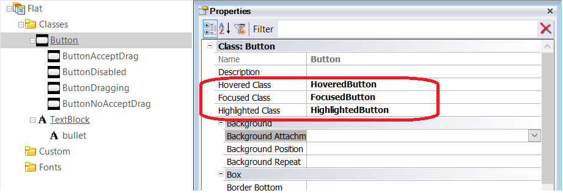
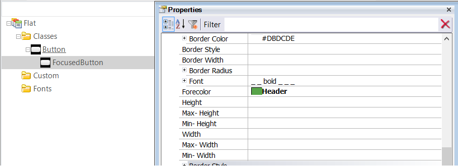

You can configure hovering and other effects for buttons and image controls in WEB applications using the following Theme Class properties.
- Hovered Class: Class to be used when the Button is hovered over
- Focused Class: Class to be used when a Button gets the focus
- Highlighted Class: Class to be used when a Button is active (it's being pressed).
- Hovered Class: Class to be used when the Image is hovered over
- Focused Class: Class to be used if an Image gets the focus, its Link property is set, or it's bound to an event
- Highlighted Class: Class to be used if an Image is active (it's being pressed), its Link property is set, or it's bound to an event.
- Hovered Class: Class to be used when the Table is hovered over
- Hovered Class: Class to be used when the Section is hovered over
The class assigned to the Hovered Class, Focused Class, and Highlighted Class properties for a Button has to be a descendant of the Button class as well (the same criteria is used for the other controls).


|